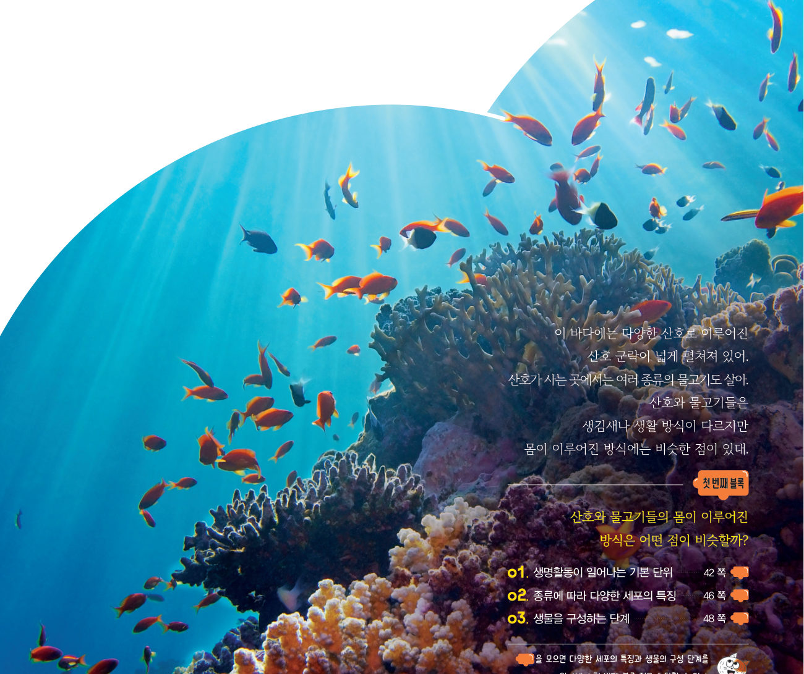
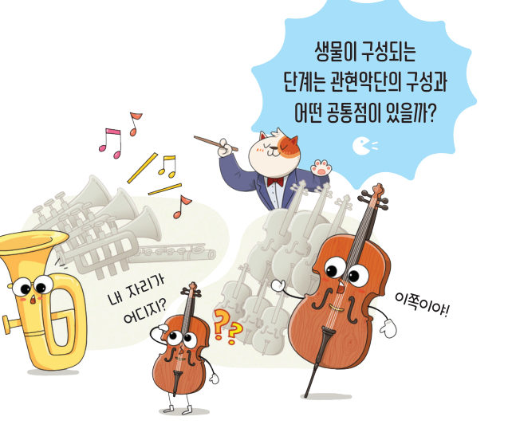
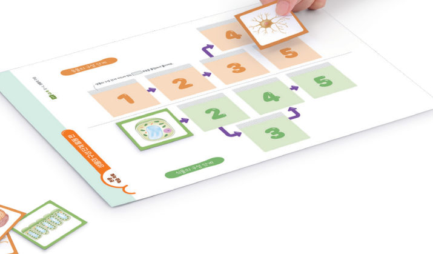
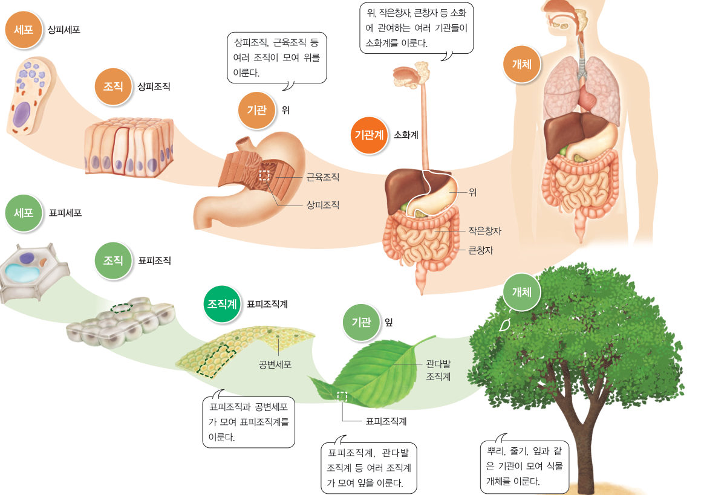

“내 자리가 어디지?” “이쪽이야!” 생물이 구성되는 단계는 관현악단의 구성과 어떤 공통점이 있을까? 구성 단계 카드를 순서대로 늘어놓고, 가상 확대경으로 사람과 나무를 세포까지 확대해 보자.
생물은 어떻게 구성되어 있을까?
관현악단은 관악기가 모인 관악기군, 현악기가 모인 현악기군 등 여러 악기군이 모여 이루어진다. 여러 개의 세포로 이루어진 생물도 세포를 기본 단위로, 몇 가지 단계를 거쳐 이루어진다.

여러 개의 세포로 이루어진 생물의 구성 단계는 그림 2-3과 같다. 기능이 비슷한 세포들이 모여 조직을 이루고, 여러 조직이 모여 고유한 모양과 기능을 갖춘 기관을 이루며, 기관이 모여 하나의 독립된 생물인 개체가 된다. 동물의 구성 단계에는 관련된 기능을 하는 기관들로 이루어진 기관계가 있다. 식물의 구성 단계에는 몇 가지 조직이 모여 이루어진 조직계가 있다. 이처럼 생물은 일정한 단계를 거쳐 유기적으로 이루어진다.

| ④ 여러 조직이 모여 고유한 모양과 기능을 갖춘 기관을 이룬다. | |
| ⑤ 식물의 구성 단계 중에는 기관이 없다. | |
| ⑥ 표피조직계와 관다발조직계가 모여 조직을 이룬다. | |
| ⑦ 소화계, 호흡계 등 여러 기관계가 모여 동물 개체를 이룬다. | |
| ⑧ 동물과 식물은 모두 일정한 단계를 거쳐 유기적으로 이루어진다. |
| ⑴ 세포 | |
| ⑵ 조직 | |
| ⑶ 기관 | |
| ⑷ 기관계 | |
| ⑸ 개체 |
| 평가 항목 | 스스로 평가 |
|---|---|
| 지식·이해 세포와 생물의 구성 단계를 설명할 수 있는가? | |
| 과정·기능 세포를 관찰하고, 세포의 특징을 추론할 수 있는가? | |
| 가치·태도 세포와 생물의 구성 단계에 과학적 흥미를 느꼈는가? |